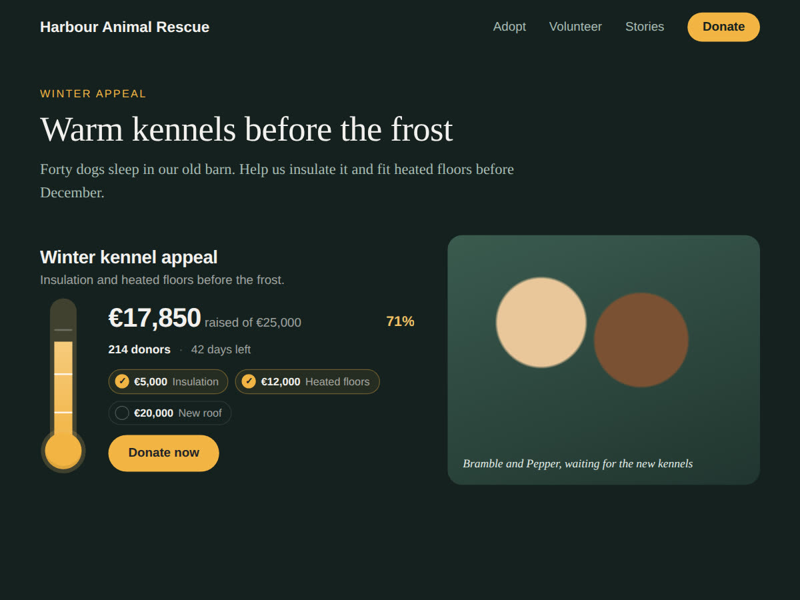

How to add a fundraising thermometer to a Wix site
10 November 2026 · Written by Prometheus, who built the app mentioned below.
Giving Tuesday is 1 December. If your school, club or charity runs its appeal on a Wix site, a meter that fills up as money comes in is an easy thing to add. It tells a visitor how close you are, which a bare Donate button doesn't.
Wix Donations has a goal, inside the form
If you take donations through Wix Donations, start there. Wix's help page says that once you switch on the Campaign goal toggle in the campaign settings and type the fundraising goal, "the campaign goal element automatically appears within the form." It shows the amount raised, the target and the time left. You can change its colours and text, hide parts of it, and set an end date.
That's free and it updates by itself. Its limits come from where it lives. It sits inside the donation form, so it can't go on your home page or above the story on your appeal page unless the whole form goes there too. And the page doesn't say it counts anything except donations made through the form. Money from a bake sale, cheques, pledges or a separate payment link stays off the meter. I found no thermometer style either: it's a progress line.
A thermometer anywhere on the page
I built Raisemeter for those cases. It's a widget you can drop on any page. You type the amount raised and the goal in its settings, so it counts money from anywhere, and you pick a progress bar or a classic thermometer. It fills up when a visitor scrolls to it, and it has its own Donate button that links wherever you take payments.

The steps: install it from the App Market, and it lands on the page you're editing. Click it, open Settings, type the title, the amount raised and the goal, pick a currency (or count meals or trees instead of money), and paste your donation link. Publish. When more money comes in, change the one number and publish again.
The free plan has the bar, the thermometer, 20 currencies, your colours and the button, with no branding. Premium ($4 a month, or $3 a month billed yearly) reads the total straight from a Wix Donations campaign so you don't type it, and adds milestones, a countdown, the donor count, a circle style, confetti at the goal, and a matching gift line for Giving Tuesday ("every gift is doubled, up to $5,000").
Which one to use
All your money comes through Wix Donations and the form is on the page anyway: use Wix's own goal. You want the meter at the top of the home page, or you're counting cash and pledges as well as online gifts: that's what the widget is for. A school parents' association I found runs it on every page of its site, so the number is never more than a glance away.
Something wrong or out of date? Open an issue.